전파전자통신기사 (2018-03-10 기출문제)
1과목: 디지털전자회로
1. 60[Hz] 정현파 신호가 전파정류기에 입력될 경우 출력신호의 주파수는?
- 0[Hz]
- 30[Hz]
- 60[Hz]
- 120[Hz]
(정답률: 75%)

2. 다음 중 스위칭 정전압 회로에 대한 설명으로 틀린 것은?
- 높은 효율을 갖는다.
- 제어소자의 스위칭 동작으로 대부분의 시간이 포화와 차단으로 동작한다.
- 고역통과필터를 사용한다.
- 펄스폭 변조기를 사용한다.
(정답률: 67%)
3. 베이스 접지 증폭회로에서 차단주파수가 50[MHz]인 트랜지스터를 이미터 접지로 했을 때의 차단주파수는 얼마인가? (단, β=99라 한다.)
- 100[kHz]
- 300[kHz]
- 500[kHz]
- 700[kHz]
(정답률: 62%)
4. 다음과 같은 궤환 증폭회로(부궤환)의 궤환 증폭도(Af)는?
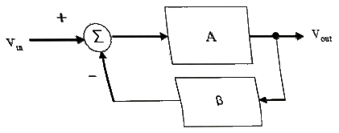
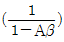
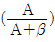
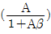
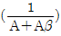
(정답률: 75%)
5. 어떤 차동증폭기의 차동이득이 1,000이고 동상이득이 0.1일 때 이 증폭기의 동상신호제거비(CMRR) 값은?
- 10
- 100
- 1,000
- 10,000
(정답률: 75%)
6. 다음 회로의 종류는?
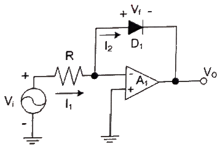
- 반파정류회로
- 전파정류회로
- 피크검출기
- 대수 증폭기회로
(정답률: 58%)
7. 증폭기와 정궤환 회로를 이용한 발진회로에서 증폭기의 이득을 A, 궤환율은 β라고 할 때, βA＞1이면 출력되는 파형은 어떤 현상이 발생하는가?
- 출력되는 파형의 진동이 서서히 사라진다.
- 출력되는 파형은 진폭에 클리핑에 일어난다.
- 지속적으로 안정적인 파형이 발생한다.
- 출력되는 파형은 서서히 진폭이 작아진다.
(정답률: 69%)
8. 다음 중 온도 특성이 좋고, 전원이나 부하의 변동에 대하여 비교적 안정도가 좋기 때문에 안정한 주파수의 발생원으로 많이 쓰이는 발진회로는?
- 빈 브리지형 발진회로
- 수정 발진회로
- RC 발진회로
- 이상형 발진회로
(정답률: 78%)
9. FM 변조에서 최대 주파수 편이가 80[kHz]일 때 주파수 변조파의 대역폭은 약 얼마인가?
- 40[kHz]
- 60[kHz]
- 80[kHz]
- 160[kHz]
(정답률: 69%)
10. FM 검파 방식 중 주파수 변화에 의한 전압 제어 발진기의 제어 신호를 이용하여 복조하는 방ㅎ식은?
- 계수형 검파기
- PLL형 검파기
- 포스터-실리 검파기
- 비 검파기
(정답률: 73%)
11. 다음 중 주파수 변조에 대한 설명으로 틀린 것은?
- 협대역 FM과 광대역 FM 방식이 있다.
- 변조신호에 따라 반송파의 주파수를 변화시킨다.
- 선형 변조방식이다.
- 반송파로는 cos 함수 또는 sin 함수와 같은 연속함수를 사용한다.
(정답률: 67%)
12. 다음 중 아날로그 신호를 디지털 신호로 변환할 때 양자화 잡음의 경감 대책이 아닌 것은?
- 압신기를 사용한다.
- 양자형 스텝수를 감소시킨다.
- 양자화 비트수를 증가시킨다.
- 비선형화 한다.
(정답률: 71%)
13. 다음 중 구형파를 발생시키는 발진기는?
- 수정발진기
- 멀티바이브레이터
- 플레이트동조발진기
- 다이테트론발진기
(정답률: 75%)
14. 다음 회로에서 Vi>VB일 때, 회로의 출력 파형은 어느 것인가? (단, 다이오드의 VT 값은 무시한다.)
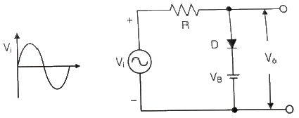
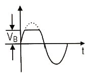
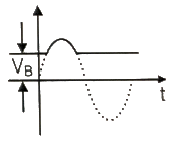
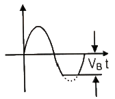
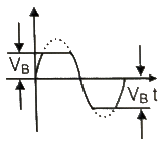
(정답률: 70%)
15. 다음 회로에서 VCC=5[V]일 때 출력 전압은? (단, A=5[V], B=0[V], 다이오드의 VT=0[V]이다.)
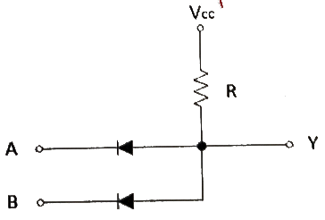
- 0[V]
- 2.5[V]
- 5[V]
- 7.5[V]
(정답률: 61%)
16. 다음 그림의 논리 회로에 대한 논리식은?
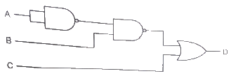
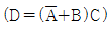
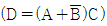
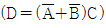
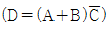
(정답률: 70%)
17. 그림의 회로에서 A=B=0이면 X1과 X2의 값은 각각 얼마인가?
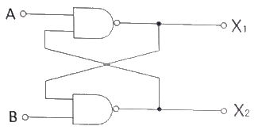
- X1=0, X2=0
- X1=0, X2=1
- X1=1, X2=0
- X1=1, X2=1
(정답률: 70%)
18. 플립플롭 6개로 구성된 계수기가 가질 수 있는 최대 2진 상태 수는?
- 16개
- 32개
- 64개
- 85개
(정답률: 80%)
19. 다음 중 전가산기(Full Adder)를 정확히 설명한 것은?
- 자리올림을 더하여 그 자리의 2진수의 덧셈을 완전히 하는 회로이다.
- 아랫자리의 자리올림을 더하여 홀수의 덧셈을 하는 회로이다.
- 아랫자리의 자리올림을 더하여 짝수의 덧셈을 하는 회로이다.
- 자리올림을 무시하고 일반 계산과 같이 덧셈하는 회로이다.
(정답률: 73%)
20. 다음 중 특정 비트의 값을 무조건 0으로 바꾸는 연산은?
- XOR 연산
- 선택적-세트(Selective-Set) 연산
- 선택적-보수(Selective-Complement) 연산
- 마스크(Mask) 연산
(정답률: 85%)
2과목: 무선통신기기
21. AM 변조에서 무변조와 변조일 때의 안테나에서 측정된 전류가 각각 3[A], 3.2[A]였다면 변조도(m)으로 알맞은 것은?
- 0.525
- 0.428
- 0.329
- 1.525
(정답률: 60%)
22. 수신주파수가 700[kHz]이고, 중간주파수가 455[kHz]인 수퍼헤테로다인 수신기가 10[kHz]의 대역폭을 갖는 신호를 수신할 때 영상신호의 주파수는 몇 [kHz]인가?
- 345[kHz]
- 1155[kHz]
- 1610[kHz]
- 1720[kHz]
(정답률: 95%)
23. AM파 VAM=(100+60cos6000πt)cos14×105πt로 표시될 때 상측대파 주파수는 얼마인가?
- 300[Hz]
- 600[Hz]
- 703[kHz]
- 1406[kHz]
(정답률: 90%)
24. 정현파 신호로 변조된 AM파의 측정시 최대진폭(Vmax)이 20[V]이고 최저진폭(Vmin)이 5[V]일 때 변조도(m)는 얼마인가?
- 0.9
- 0.8
- 0.6
- 0.4
(정답률: 87%)
25. 음성신호의 피크값에서 발생된 SSB 변조신호의 피크 대 피크 전압이 200[V]이고, 이 신호가 50[Ω]인 안테나에 공급될 때 출력 PEP(최대 포락선 전력)으로 알맞은 것은?
- 약 100[W]
- 약 200[W]
- 약 400[W]
- 약 800[W]
(정답률: 34%)
26. ?0[kHz]로 하고 10[kHz]의 신호파로 M 변조했을 때 변조지수와 주파수대역폭은?
- 변조지수 5, 대역폭 120[kHz]
- 변조지수 5, 대역폭 60[kHz]
- 변조지수 0.2, 대역폭 40[kHz]
- 변조지수 5, 대역폭 600[kHz]
(정답률: 65%)
27. 주파수 체배기의 동조회로에 제2고조파 전류 3.6[A]가 인가되고, 제2고조파 전압이 1.8[V]가 인가되었을 때, 제2고조파의 전력은 얼마인가?
- 6.48[W]
- 1.62[W]
- 3.24[W]
- 8.10[W]
(정답률: 81%)
28. 2[GHz] DS 스펙트럼 확산 시스템을 사용하여 10[kbps]데이터를 1[Mbps]로 확산시키며 변조방식은 BPSK를 사용한다. 이 시스템의 처리이득은 얼마인가?
- 100[dB]
- 10[dB]
- 20[dB]
- 30[dB]
(정답률: 78%)
29. ADSL을 사용하는 경우 음성과 데이터를 분리하여 주는 기능을 하는 장치를 말하며 가입자댁내 및 전화국내 양쪽에 반드시 설치해야 되는 장비는 무엇인가?
- 스크램블러
- 디스크램블러
- 스플리터
- 셋톱박스
(정답률: 96%)
30. 다음 중 CDMA 통신에서 이동국으로 하여금 반송파 위성 동기화 및 기지국 정보 획득 등에 필요한 정보를 제공하는 채널은?
- 파일럿 채널(Pilot Channel)
- 동기 채널(Sync Channel)
- 페이징 채널(Paging Channel), 호출 채널)
- 접속 채널(Access Channel)
(정답률: 91%)
31. 다음 중 GMDSS 통신 기능에 해당되지 않는 것은?
- 조난 통보
- 수색·구조 조정 통신
- e-Navigation 완성
- 현장 통신
(정답률: 95%)
32. 해상이동업무식별부호(MMSI)는 몇 자리로 구성되는가?
- 6 자리
- 7 자리
- 8 자리
- 9 자리
(정답률: 80%)
33. 연축전지는 충방전 상태를 어느 정도 알 수 있는데 충전 완료 음극판의 색깔과 화학식이 맞는 것은?
- 회백색-Pb
- 적갈색-PbO2
- 회백색-PbO2
- 적갈색-PbSO4
(정답률: 90%)
34. 다음 중 부동 충전방식의 장점이 아닌 것은?
- 축전지가 항상 완전 충전 상태에 있다.
- 정류기의 용량이 적어도 된다.
- 축전지 수명에 좋은 영향을 준다.
- 자기 방전이 없어진다.
(정답률: 96%)
35. UPS의 기본 구성도는 아래 그림과 같다. 그림의 설명에서 틀린 것은?
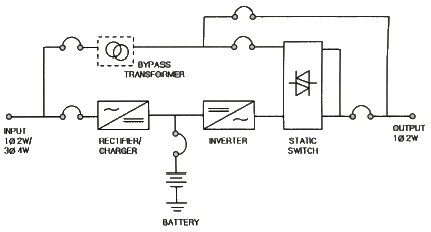
- 인버터(Inverter)는 교류전원을 직류전원으로 바꾸어 주는 장치이다.
- 동기절환 스위치(Static Switch)는 인버터의 과부하 및 이상 시 예비사용 전원(Bypass Line)으로 바꾸어 주는 장치이다.
- 정류기(Rectifier)는 교류전원으로부터 전원을 공급받아 직류전원으로 바꾸어주는 장치이다.
- 축전지(Battery)는 정전 시 부하에 일정한 시간동안 전원을 공급하는데 필요한 장치이다.
(정답률: 81%)
36. 수신기의 수신품질을 판정하는 항목이 아닌 것은?
- 감도
- 충실도
- 선택도
- 상호 변조적 왜곡
(정답률: 85%)
37. 수신기의 잡음지수(NF:Noise Figure)와 관계없는 것은? (단, 첨자 i:입력, o:출력, k:볼츠만 상수, T:절대온도, B:등가잡음 대역폭이다.)
- 잡음지수 F=(Si/Ni)(So/No)
- 잡음지수 F=(Si/No)(Si/No)
- 잡음지수 F=(Si/So)-(No/kTB)
- 잡음지수 F=kTB+(So/No)
(정답률: 64%)
38. 단말기의 수신신호의 세기가 -90[dBm], 데이터 속도가 1[Mbps]인 경우 Eb(비트다 에너지)는 얼마인가?
- -130[dBm/bit]
- -140[dBm/bit]
- -150[dBm/bit]
- -160[dBm/bit]
(정답률: 58%)
39. 부하임피던스를 ZL, 선로의 특성임피던스를 ZO라고 할 때 부하단에서의 전압 반사계수는?
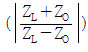
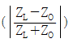
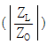
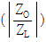
(정답률: 80%)
40. 다음 중 전원장치의 구비조건으로 맞지 않는 것은?
- 연속적으로 확실한 전원을 공급해야 한다.
- 전원전압의 변동이 가급적 적어야 한다.
- 취급이 용이하고 경제적이어야 한다.
- 전원의 전류량을 쉽게 증가시킬 수 있어야 한다.
(정답률: 91%)
3과목: 안테나공학
41. 다음 중 변위전류에 대한 설명으로 잘못된 것은?
- 변위전류는 전속밀도의 시간적 변화이다.
- 변위전류는 유전체에 흐르는 전류이다.
- 변위전류는 전계와 자계를 발생시킨다.
- 전계 E의 시간적 변화가 있으면 변위전류가 흐른다.
(정답률: 80%)
42. 다음 중 단파대의 전파특성으로 적합하지 않은 것은?
- 대전력으로 근거리 통신이 가능하다.
- 공전 방해를 적게 받는다.
- 페이딩, 에코, 산란 등의 영향을 받는다.
- 지향성이 양호한 송수신 안테나 이용이 용이하다.
(정답률: 91%)
43. 다음 중 전자파 통로에 의한 분류를 설명한 것으로 틀린 것은?
- 전자파 통로는 지상파와 공중파로 크게 나눌 수 있다.
- 지상파에는 직접파, 대지반사파, 지표파, 회절파가 있다.
- 공중파에는 단파와 초단파로 구분된다.
- 전자파의 전파경로는 송·수신소간의 거리, 사용주파수, 통신시기 등에 의하여 다르게 된다.
(정답률: 84%)
44. 다음 중 전파의 주파수대별 일반적인 성질로 옳지 않은 것은?
- 초단파대의 전파는 주로 직접파와 대지반사파에 의한 통신이 이루어진다.
- 단파의 전리층 반사파는 주로 F층을 반사하여 전파되며 원거리 통신이 가능하다.
- 중파는 주로 지표파에 의하여 전파되지만 야간에는 전리층 E층 반사파에 의해서도 전파한다.
- 장파는 해상에서 감쇠가 크기 때문에 지표파 보다는 대류권 산란파에 의하여 장거리 통신이 가능하다.
(정답률: 70%)
45. 다음 중 반사계수와 투과계수에 관한 설명으로 옳지 않은 것은?
- 반사파와 입사파의 비를 반사계수, 투과파와 입사파의 비를 투과계수라 한다.
- 선로상에 존재하는 반사파의 정도를 표시하기 위해 반사계수를 사용한다.
- 반사계수가 크면 임피던스 부정합에 의해 부하에 도달하는 에너지가 커진다.
- 부하에 흘러 들어가는 에너지의 양을 표시하기 위해 투과계수를 사용한다.
(정답률: 77%)
46. 다음 중 동조급전방식에 대한 설명으로 옳은 것은?(오류 신고가 접수된 문제입니다. 반드시 정답과 해설을 확인하시기 바랍니다.)
- 송신기와 안테나 사이의 거리가 멀수록 많이 사용한다.
- 전압급전일 때 직렬공진의 급전회로를 사용하려면 급전선의 길이를 λ/4의 기수배로 사용한다.
- 정합장치가 불필요하다.
- 임피던스 정합회로를 사용하므로 진행파가 급전된다.
(정답률: 32%)
47. 다음 중 평행2선식 급전선의 특징으로 틀린 것은?
- 내압이 높으므로 대전력에서도 사용할수 있다.
- 설치비가 싸고 고장 수리가 간단하나 조정이 다소 어렵다.
- 동일 전력을 전송하는 경우 동축 급전선보다 선간 전압이 높아야 한다.
- 동축 급전선에 비하여 특성 임피던스가 낮다.
(정답률: 60%)
48. TE10 mode인 구형 도파관의 특성임피던스는 약 몇 [Ω]인가? (단, 주파수는 10[GHz], 긴 변의 길이는 3[cm], 특성임피던스는 정수자리만 표시한다.)
- 377[Ω]
- 435[Ω]
- 502[Ω]
- 626[Ω]
(정답률: 74%)
49. 미소 다이폴에 의한 전계와 자계성분 중 둘 다 복사에 전혀 기여하지 못하는 것은? (단, E, H는 각각 전계와 자계를 나타내며, r, θ, ø는 구좌표계의 좌표이다.)
- Eø, Hr
- Er, Hø
- Er, Hø
- Eθ, Hø
(정답률: 84%)
50. 300[MHz]용 반파장 다이폴 안테나에서 안테나 도선의 직경이 5[cm]일 때, 단축률은 얼마인가? (단, 계산값은 소수점 둘째자리에서 반올림한다.)
- 7.5[%]
- 8.5[%]
- 9.8[%]
- 10.8[%]
(정답률: 59%)
51. 안테나의 실효인덕턴스를 Le, 실효정전용량을 Ce, 실효저항을 Re라고 하면 안테나 Q의 식으로 틀린 것은?
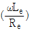
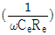
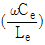
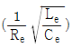
(정답률: 85%)
52. 반파장 다이폴 안테나의 Q의 식으로 옳은 것은? (단, Z0는 특성 임피던스이다.)
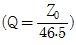
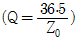
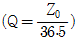
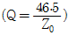
(정답률: 70%)
53. 인덕턴스가 30[μH], 정전용량이 40[pF]인 안테나가 있다. 이 안테나를 6[MHz]로 사용하기 위해 직렬로 연결된 단축콘덴서는 얼마인가? (단, 계산값은 소수점 첫 자리까지 반올림하여 표시한다.)
- 36.7[pF]
- 46.7[pF]
- 56.7[pF]
- 66.7[pF]
(정답률: 75%)
54. 다음 중 정관형 안테나에 관한 설명으로 틀린 것은?
- 전리층 반사를 적게 하여 양청구역을 넓힐 수 있다.
- λ/4 수직접지 안테나에 원정관을 설치한다.
- 고유파장을 길게 할 수 있다.
- 실효고의 감소효과를 갖는다.
(정답률: 64%)
55. 다음 중 전파가 가시거리 이상으로 도달되는 경우가 적어서 멀리 떨어진 지점에서는 동일 주파수를 사용할 수 있는 통신은?
- 중파통신
- 단파통신
- 산악통신
- 마이크로파통신
(정답률: 80%)
56. 대류권 전파에서 “라디오 덕트”가 발생하는 원인이 아닌 것은?
- 야간 냉각에 의한 덕트
- 이류성 덕트
- 상승기류가 생기는 현상에 의한 덕트
- 전선에 의한 덕트
(정답률: 85%)
57. 지구 표면에서 상공을 향하여 충격파를 발사 하였더니 5/3[ms] 후에 반사파를 감지하였다. 이 때 반사층의 높이는 약 얼마인가?
- 150[km]
- 200[km]
- 250[km]
- 300[km]
(정답률: 60%)
58. 반송파와 각 측파대가 받는 감쇠의 정도와 전리층이 상하 또는 좌우로 이동할 때 각각 받는 감쇠의 정도가 달라짐에 따라 발생하는 페이딩은?
- 간섭성 페이딩
- 편파성 페이딩
- 선택성 페이딩
- 흡수성 페이딩
(정답률: 70%)
59. 다음 중 정지위성에 대한 설명으로 옳지 않은 것은?
- 지구의 자전주기와 같은 주기로 회전한다.
- 적도상공 약 36,000[km]에 위치한다.
- 3개의 정지궤도위성을 사용하며, 극지방을 포함한 세계 전역의 통신이 가능하다.
- 에러율은 적으나 전파지연시간과 전송손실이 문제이다.
(정답률: 84%)
60. 태양에서 발생하는 자외선의 돌발적 증가로 인하여 발생되며 주로 고위도 지방에서 심하게 발생되는 전파방해 현상은?
- 공전
- 에코현상
- 자기람현상
- 델린저현사
(정답률: 85%)
4과목: 통신영어 및 교통지리
61. Choose the one which is not included to the purposes of ITU.
- To maintain and extend international cooperation among all its Member States for the improvement and rational use of telecommunications of all kinds.
- To promote and to offer technical assistance to developing countries in the field of telecommunications,
- To act as governing body of the Union, on behalf of the Plenipotentiary Conference within the limits of the powers delegated to it by the latter in the interval between Plenipotentiary Conferences.
- To promote the development of technical facilities and their most efficient operation with a view to improving the efficiency of telecommunication services.
(정답률: 96%)
62. Who shall perform the duties of the secretary-General in the absence of the Union?
- the staff of the Union
- the Director of the ITU-R
- the Deputy secretary-Greneral
- the vice-chairman of the RRB
(정답률: 85%)
63. Which is not the member of the Coordination Committee?
- Secretary-General
- Deputy Secretary_General
- Directors of the three Bureaux
- Delegate of the Members
(정답률: 58%)
64. Select appropriate one in the blank in following sentence.
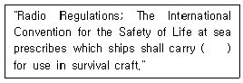
- VHF radio telephone installation
- portable radio equipment
- radio transmitters
- radio telephone apparatus
(정답률: 86%)
65. Select appropriate one in the blank in following Radio REgulation.
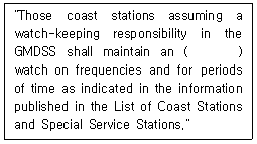
- auto alarm receiver
- two tone alarm signal watch receiver
- automatic digital selective calling
- NAVTEX receiver
(정답률: 65%)
66. Choose the suitable words for blanks in the follwing sentence.
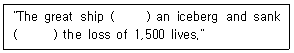
- find, joining
- struck, with
- strike, having
- found, on
(정답률: 81%)
67. Choose the wrong Korean translation for the underlined parts.
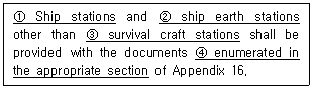
- 선박국
- 선박지구국
- 구명정국
- 해당 절에서 송신하고 있는
(정답률: 87%)
68. 해상이동업무용 약어에서 “K"의 올바른 정의는?
- Invitation to transmit
- Starting signal
- End of work
- Indication of a request
(정답률: 77%)
69. Which one of the follwing Phonetic Alphabet is wrong?
- D - Delta
- M - Mike
- P - People
- T - Tango
(정답률: 89%)
70. 다음 IMO 용어를 우리말로 잘못 표현한 것은?
- JETTISON CARGO : 화물의 투하
- ATMOSPHERIC PRESSURE : 기압
- TRAFFIC LANE : 통항 분리 수역의 통항로
- DRAGGING ANCHOR : 닻을 감아 올리다
(정답률: 95%)
71. What do we call the follwing phrase in Korean?
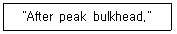
- 선수격벽
- 선미격벽
- 좌현격벽
- 우현격벽
(정답률: 91%)
72. Choose the wrong translation of those follwing ship terms.
- 좌현 : port
- 홀수 : draft
- 선미 : scuttle
- 선수 : bow
(정답률: 90%)
73. 다음 문장의 괄호 안에 들어갈 적절한 단어는?
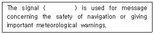
- MAYDAY
- PAN PAN
- SECURITE
- EMERGENCY
(정답률: 85%)
74. 다음 해상무선표 지국과 짝지은 표지부호가 틀린 것은 어느 것인가?
- 거문도 등대 무선표지국 - KM
- 죽도 등대 무선표지국 - CK
- 어청도 등대 무선표지국 - EC
- 주문진 등대 무선표지국 - JM
(정답률: 79%)
75. 다음 중 수에즈 운하(Suez Canal)에 대한 설명으로 틀린 것은?
- 1869년 11월에 10여 년이 공사 끝에 완성되었다.
- 일일 평균 통과선박은 약 50여 척 정도이다.
- 통과소요시간은 약 7∼8시간이다.
- 전장은 193km이다.
(정답률: 82%)
76. 다음 중 The great Lakes에 포함되지 않는 것은?
- Orinoco
- Superior
- Michigan
- Huron
(정답률: 96%)
77. 다음 중 세계 주요 항구명으로 소재국이 틀린 것은?
- Rotterdam은 Netherlands에 있다.
- Antwerp는 Belgium에 있다.
- Liverpool은 Portugal에 있다.
- Montevideo는 Uruguay에 있다.
(정답률: 100%)
78. 다음 중 편서풍의 설명으로 맞지 않는 것은?
- 온대 고압대에서 한 대 저압부의 남북 위도 30도와 60도 사이에서 분다.
- 지구 자전에 의한 전향력에 의하여 발생한다.
- 북반구에서는 남서풍, 남반구에서는 북서풍이 분다.
- 남반구보다 북반구의 편서풍이 강하다.
(정답률: 90%)
79. 다음 중 북적도 해류에서 시작하여 동해까지 오는 해류로 난류에 속하는 것은?
- 쿠로시오 해류
- 오야시오 해류
- 리만 해류
- 대한 해류
(정답률: 90%)
80. 인도의 벵갈만에서 발생하는 열대성 저기압을 무엇이라 부르는가?
- Cyclone
- Typhoon
- Hurricane
- Willy Willy
(정답률: 95%)
5과목: 전파관계법규
81. "허가나 신고로 개설하는 무선국에서 이용할 특정한 주파수를 지정하는 것“으로 정의되는 것은?
- 주파수지정
- 주파수분배
- 주파수할당
- 주파수회수
(정답률: 92%)
82. 우주국과 지구국으로 구성된 통신망의 총체를 무엇이라 하는가?
- 위성궤도
- 위성망
- 위성통신망
- 인공위성망
(정답률: 85%)
83. 주파수할당을 받은 자가 주파수이용기간이 만료되어 주파수재할당을 받으려면 주파수이용기간 만료 몇 개월 전에 재할당 신청을 하여야 하는가?
- 1개월 전
- 2개월 전
- 3개월 전
- 6개월 전
(정답률: 63%)
84. 다음 중 무선국 개설허가의 유효기간이 1년인 것은?
- 실험국
- 아마추어국
- 간이무선국
- 무선측위국
(정답률: 90%)
85. 다음 중 무선국의 준공검사의 면제 또는 생략이 가능한 무선국이 아닌 것은?
- 어선용에 설치하는 무선국으로서 대통령령으로 정하는 무선국
- 소규모의 무선국 및 아마추어국으로서 대통령령으로 정하는 무선국
- 소출력 방송국
- 외국에서 취득한 후 국내의 목적지에 도착하지 못한 선박의 무선국
(정답률: 90%)
86. 다음 중 항공이동업무에 있어서 통신의 우선 순위가 가장 높은 것은?
- 기상통보에 관한 통신
- 무선방향탐지에 관한 통신
- 항공기의 안전운항에 관한 통신
- 국제연합헌장의 적용에 관한 통신
(정답률: 80%)
87. 다음 중 ‘준공검사를 받지 아니하고 운용할 수 있는 무선국’에 해당되지 않는 것은?
- 50와트 미만의 무선설비를 시설하는 어선의 선박국
- 아마추어국
- 국가안보 또는 대통령 경호를 위하여 개설하는 무선국
- 공해 또는 극지역에 개설한 무선국
(정답률: 79%)
88. VHF 주파수대의 주파수 범위는?
- 3∼30[MHz]
- 30∼300[MHz]
- 3∼30[GHz]
- 30∼300[kHz]
(정답률: 100%)
89. 다음 중 선박이 항행 중에 발생하는 중대한 위험을 예방하기 위하여 행할 수 있은 무선통신은?
- 조난통신
- 긴급통신
- 안전통신
- 비상통신
(정답률: 81%)
90. 다음 괄호 안에 들어갈 내용으로 알맞은 것은?
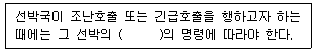
- 항해사
- 통신사
- 책임자
- 운용자
(정답률: 100%)
91. 다음 중 무선종사자를 무선국에 배치할 수 있는 자는?
- 피성년 후견인
- 외환의 죄를 위반하여 5년형을 선고받고 집행이 끝난 후 3년이 경과한 자
- 파산선고를 받은 자
- 국가보안법을 위반하여 금고 이상의 형을 받고 그 집행 중에 있는 자
(정답률: 95%)
92. 전파통신 분야의 국제법인 전파규칙(RR)에 대한 승인과 해석을 맡는 기구인 RRB란?
- 전파규칙
- 전파규칙위원회
- 전권위원회
- 이사회
(정답률: 90%)
93. 우리나라가 ITU에 정식으로 가입한 해는?
- 1950년
- 1949년
- 1952년
- 1954년
(정답률: 100%)
94. 세계전파통신회의(WRC)의 주요 의제의 범위가 아닌 것은?
- 전파규칙의 부분적 개정
- 전파통신회의의 권한 내에 있는 범세계적인 성격의 문제
- 전파통신총회 조직 통폐합
- 전파규칙위원회(RRB) 활동에 관한 안건 검토
(정답률: 92%)
95. 다음 중 VHF 무선전화에 있어서 선박이동을 위하여 항무통신국과 통신할 수 있는 주파수는?
- 156.800[MHz]
- 156.525[MHz]
- 156.650[MHz]
- 156.300[MHz]
(정답률: 96%)
96. 국제항해에 취항하는 여객선과 총톤수 300톤 이상의 화물선은 GMDSS관련 무선장비를 갖추어야 하는 바, 이러한 GMDSS선박이 반드시 갖추어야 하는 기본 장비가 아닌 것은?
- 초단파대 디지털선택 호출 장치
- 수색구조용 레이다 트렌스폰더
- 인마세트(INMARSAT) 선박지구국
- 양방향 초단파대 무선전화
(정답률: 85%)
97. 다음 중 통신보안책임자가 수행하여야 하는 사항에 속하지 않는 것은?
- 불필요한 내용의 무선통신 사용 억제
- 통신보안에 관한 관계규정 숙지 및 이행
- 통신장비 설치장소의 보호구역 설정 및 출입통제
- 무선통신을 이용하여 발신하고자 하는 통신문에 대한 보안성 검토
(정답률: 72%)
98. 통신수단 중 통신 보안도가 높은 순서부터 바르게 나타낸 것은?
- 전령통신 - 우편통신 - 무선통신 - 음향통신
- 시호통신 - 전령통신 - 음향통신 - 전파통신
- 우편통신 - 시호통신 - 음향통신 - 음향통신
- 전기통신 - 우편통신 - 시호통신 - 전파통신
(정답률: 78%)
99. 다음 중 무선전신 통신 보안대책이 아닌 것은?
- 주요내용은 평서문 화
- 불요불급한 통신 제한
- 통신보안 장비 사용
- 주기적인 보안교육
(정답률: 87%)
100. 다음 중 제한구역 및 통제구역에 그 구역의 기능 및 구조에 따라 강구되어야 하는 대책으로 알맞지 않은 것은?
- 출입인가자의 출입 통제
- 주야 경계대책
- 외부로부터의 투시, 도청 및 파괴물질의 투척방지 대책
- 방화대책 및 경보대책
(정답률: 75%)